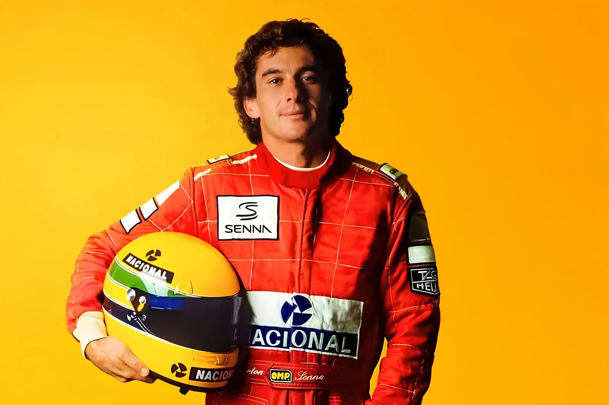
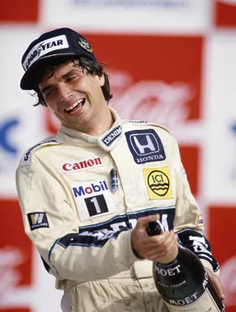
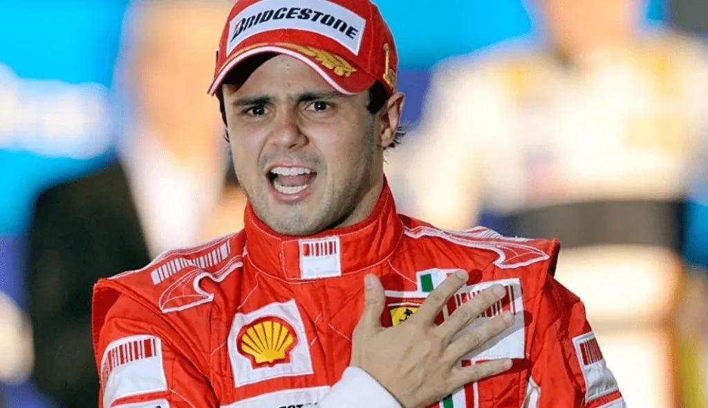
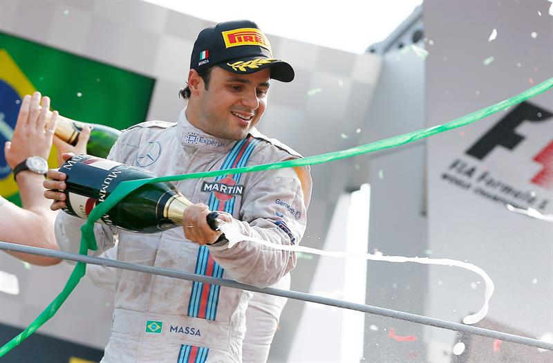
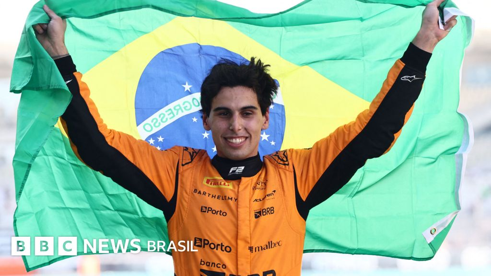
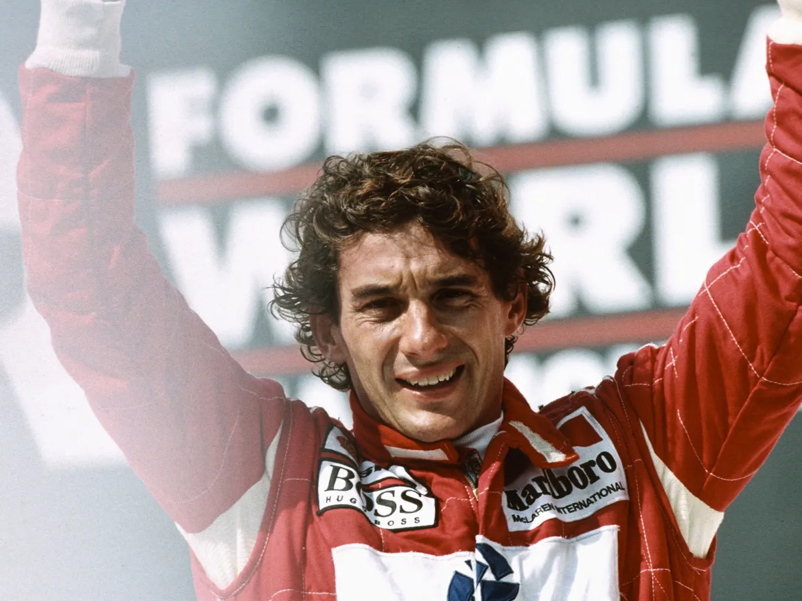
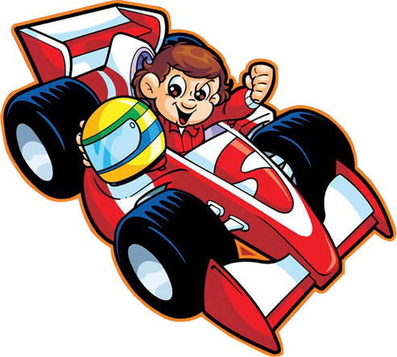

FÓRMULA 1
Conheça a história da F1 no Brasil
Home
A história da Fórmula 1 no Brasil é uma jornada de paixão nacional que moldou a identidade esportiva do país e transformou as manhãs de domingo em um ritual sagrado para milhões de brasileiros. Desde os primeiros passos internacionais nas décadas de 1930 e 1940 até a consolidação do Grande Prêmio do Brasil no calendário oficial da categoria em 1973, o automobilismo estabeleceu raízes profundas no território nacional. Mais do que um evento esportivo, a categoria máxima do automobilismo tornou-se um espelho social e cultural do país, impulsionada pelas transmissões televisivas de massa e pela construção de autódromos emblemáticos como Interlagos e Jacarepaguá.
Ídolos Brasileiros



Conquistas
O Brasil é uma das nações mais vitoriosas na história da Fórmula 1, acumulando 8 títulos mundiais de pilotos, 101 vitórias e 293 pódios, conquistados por seis pilotos diferentes. O país também detém o recorde de vitórias em diversas equipes de ponta.
Galeria de Momentos



